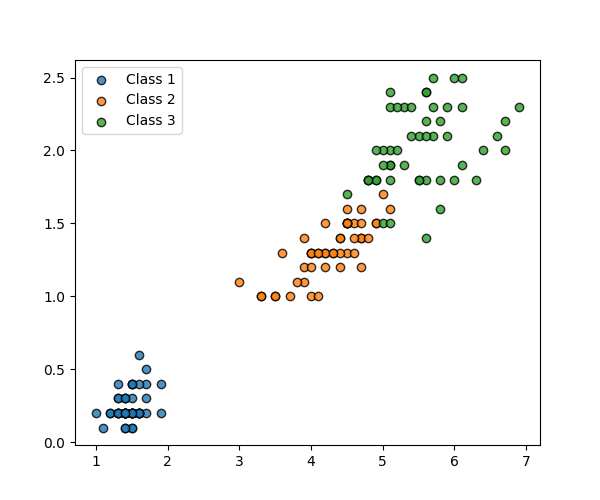
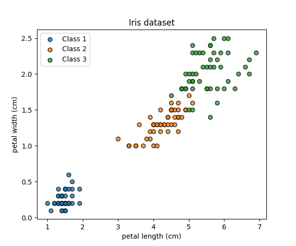
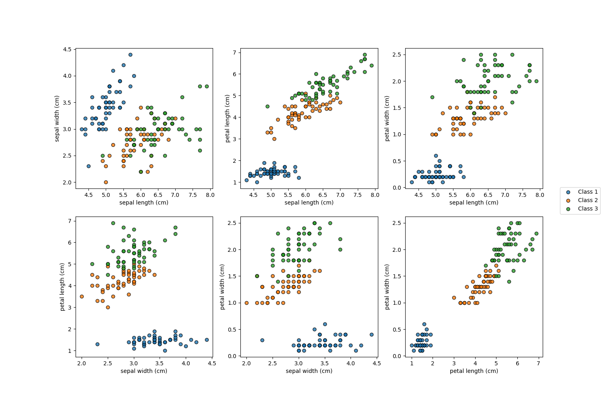
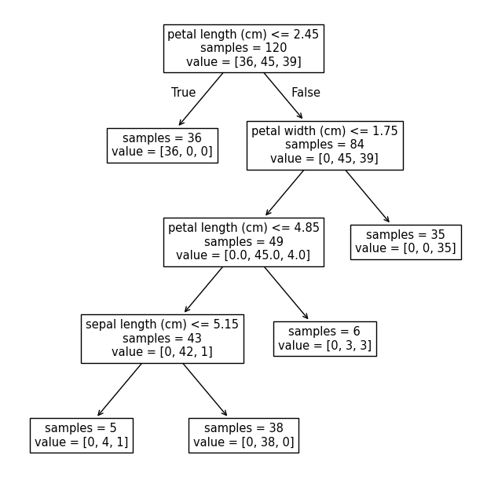
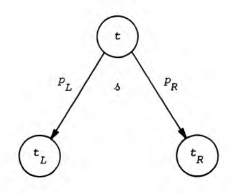
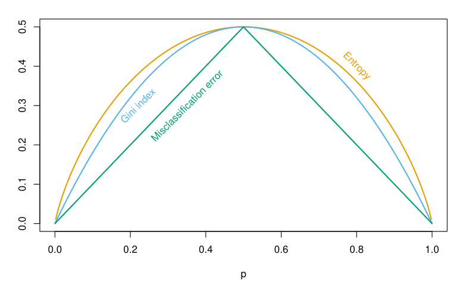
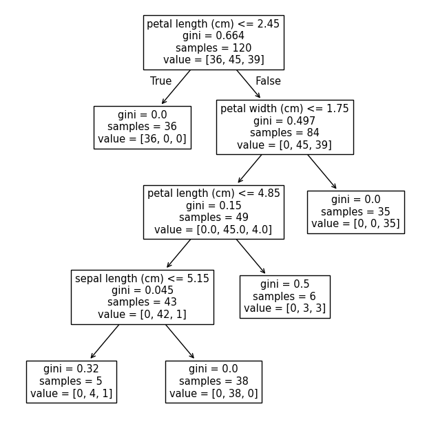
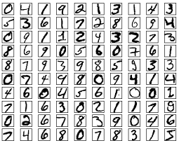

Lecture 2 - Tree-based methods and Neural Networks
2025-09-10
Consider a dataset with outcomes belonging to \(3\) classes…

The Iris dataset (Fisher, 1936)

yields:
:Number of Instances: 150 (50 in each of three classes)
:Number of Attributes: 4 numeric, predictive attributes and the class
:Attribute Information:
- sepal length in cm
- sepal width in cm
- petal length in cm
- petal width in cm
- class:
- Iris-Setosa
- Iris-Versicolour
- Iris-Virginica
============== ==== ==== ======= ===== ====================
Min Max Mean SD Class Correlation
============== ==== ==== ======= ===== ====================
sepal length: 4.3 7.9 5.84 0.83 0.7826
sepal width: 2.0 4.4 3.05 0.43 -0.4194
petal length: 1.0 6.9 3.76 1.76 0.9490 (high!)
petal width: 0.1 2.5 1.20 0.76 0.9565 (high!)
============== ==== ==== ======= ===== ====================Could we carve out the feature space…?


Consider the split of node \(t\) into \(t_{L}\) and \(t_{R}\) (left and right), then the following holds: \[\begin{aligned} & p(t_{L}) + p(t_{R}) = p(t) \\ & p_{L} = \frac{p(t_{L})}{p(t)}, \ p_{R} = \frac{p(t_{R})}{p(t)}, \ p_{L} + p_{R} = 1 \end{aligned}\] where \(p_{L}\) is the proportion going to the left node and \(p_{R}\) to the right
E.g. cf. previous slide \[\begin{aligned} p_{L} = \frac{p(t_{L})}{p(t)} = \frac{ \frac{N(t_{L})}{N} }{ \frac{N(t)}{N} } = \frac{N(t_{L})}{N(t)} \end{aligned}\]
Question: consider the nonterminal node with \(N(t) = 84\).
Define impurity measure of node \(t\): \[\begin{aligned} i(t) = \phi(p(1 \mid t), \ldots, p(K \mid t)) \end{aligned}\] where \(\phi\) is the impurity function defined on all \(K\)-tuples of probabilities
Goodness of split \(s\) for node \(t\): \[\begin{aligned} \Delta i(s, t) & := i(t) - p_{R}i(t_{R}) - p_{L}i(t_{L}) \\ &= i(t) - \frac{N(t_{R})}{N(t)}i(t_{R}) - \frac{N(t_{L})}{N(t)}i(t_{L}) \end{aligned}\]
The split \(s\) splits node \(t\) into two disjoint subsets \(t_{L}\), \(t_{R}\)
Splitting rule: at each nonterminal node \(t\) the split selected, \(s^{*}\), is the one which maximizes \(\Delta i(s, t)\) i.e. \(\Delta i(s^{*}, t) = \max_{s} \Delta i(s, t)\)

Illustration of split from (Breiman, 1984)
Gini index: \[\begin{aligned} \phi(p(1 \mid t), \ldots, p(K \mid t)) = \sum_{j = 1}^{K} p(j \mid t)(1 - p(j \mid t)) \end{aligned}\]
Entropy: \[\begin{aligned} \phi(p(1 \mid t), \ldots, p(K \mid t)) = -\sum_{j = 1}^{K} p(j \mid t) \log p(j \mid t) \end{aligned}\]
Misclassification error \[\begin{aligned} \phi(p(1 \mid t), \ldots, p(K \mid t)) = 1 - \max_{} p(j \mid t) \end{aligned}\]
Using the Misclassification error as impurity function has drawbacks

In the two-class case; image from ESLII.
\[\begin{aligned} \Delta i(s, t) = i(t) - p_{R}i(t_{R}) - p_{L}i(t_{L}) \end{aligned}\]
we can seek the best split \(s\) for each nonterminal node

min_samples_leaf samples
Define:
Majority label at node \(t\): \(k(t) := \underset{j}{\arg\max} \ p(j \mid t)\)
Resubstitution estimate \[\begin{aligned} r(t) = 1 - \max_{j}p(j \mid t) = 1 - p(k(t) \mid t) \end{aligned}\]
Node misclassification cost: \(R(t) := r(t)p(t)\)
Tree misclassification cost: \[\begin{aligned} R(T) = \sum_{t \in \tilde{T}} R(t) = \sum_{t \in \tilde{T}}r(t)p(t). \end{aligned}\]
where \(\tilde{T}\) is the set of all terminal nodes.
min_samples_leaf) is metfrom sklearn.datasets import load_iris
from sklearn.model_selection import train_test_split
from sklearn.tree import DecisionTreeClassifier, plot_tree
X, y = load_iris(return_X_y=True)
X_train, X_test, y_train, y_test = train_test_split(
X, y, random_state=2025, train_size=0.8
)
clf = DecisionTreeClassifier(
min_samples_leaf=5,
criterion="gini",
random_state=2025,
)
clf.fit(X_train, y_train)
fig, axes = plt.subplots(nrows=1, ncols=1, figsize=(8, 8))
plot_tree(
clf,
filled=False,
proportion=False,
ax=axes,
impurity=True,
feature_names=[
'sepal length (cm)',
'sepal width (cm)',
'petal length (cm)',
'petal width (cm)'
],
)
# plt.savefig("figs/iris_dt2.png", bbox_inches="tight", pad_inches=0)
\[\ell := \text{CE}(y, \hat{y}) := -\sum_{j=1}^{10} y_j \log \hat{y}_j\]
\[\mathcal{L} := -\frac{1}{n}\sum_{i=1}^{n}\sum_{j=1}^{10} y_{i, j} \log \hat{y}_{i, j}\]
example_lecture in scripts/estimate_network_mn_rw.py until backpropagation partWe update the parameters using stochastic gradient descent (SGD)
To perform SGD we need to compute the derivatives of the loss function wrt. our parameters: \[ \frac{\partial \ell}{\partial \theta}, \quad \theta = (W^{1}, W^{2}, b^{1}, b^{2}) \]
Spelling out the loss function for our two-layer network:
\[\begin{aligned} \ell := \text{CE}(y, \hat{y}) := -\sum_{j=1}^{10} y_j \log \hat{y}_j = -\sum_{j=1}^{10} y_j \log \mathrm{sm}(W^{2}\sigma(W^{1}x + b^{1}) + b^{2})_{j} \end{aligned}\]
\[ \frac{\partial \ell}{W^{1}}, \ \frac{\partial \ell}{b^{1}}, \ \frac{\partial \ell}{W^{2}}, \ \frac{\partial \ell}{b^{2}} \]
\[ \theta \leftarrow \theta - \eta \frac{\partial \ell}{\partial \theta} \] for \(\eta\) the learning rate; step in opposite direction of steepest ascent
Next, we backpropagate the errors to the first layer: \[\begin{aligned} \delta^{l_{1}} = [(W^{l_{2}})^{T} \delta^{l_{2}}] \odot \sigma'(z^{l_{1}}) = [(W^{l_{2}})^{T} \delta^{l_{2}}] \odot (\sigma(z^{l_{1}}) \odot [\iota - \sigma(z^{l_{1}})]) \end{aligned}\] where \(\iota\) a vector of ones and we used the derivative of the sigmoid function (e.g. equation (4) last week) and then update the weights in the first layer with the derivatives: \[\begin{aligned} \frac{\partial \ell}{\partial b^{l_{1}}} = \delta^{l_{1}}, \quad \frac{\partial \ell}{\partial W^{l_{2}}} = \delta^{l_{1}}(a^{l_{0}})^{T} \end{aligned}\] where we compute the outer product of \(\delta^{l_{2}} \in \mathbb{R}^{30 \times 1}\) and \(a^{l_{0}} \in \mathbb{R}^{784 \times 1}\) to update \(W^{1} \in \mathbb{R}^{30 \times 784}\).
Update using just computed derivatives and rule \(\theta \leftarrow \theta - \eta \frac{\partial \ell}{\partial \theta}\)
example_lecture in scripts/estimate_network_mn.pyscripts/estimate_network_torch.py{kind=link}
{kind=link}